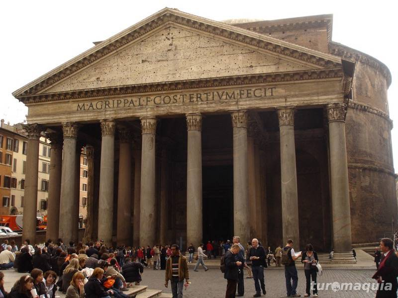
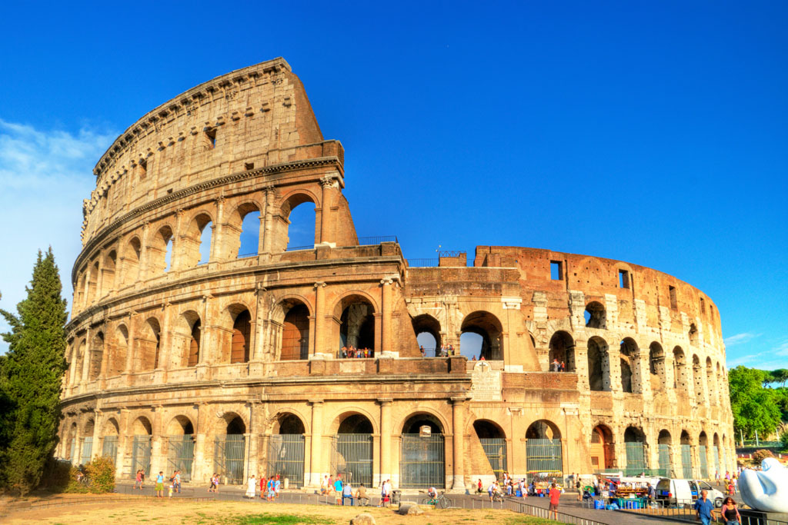

A Arte a Serviço do Estado
A arte romana floresceu em um império marcado por profundas desigualdades sociais e por uma máquina política bem articulada. Inspirados pelos gregos, os romanos criaram esculturas, edifícios, pinturas e mosaicos – mas com finalidades muito específicas. Como afirma Janson, a função predominante da arte romana era glorificar Roma e manter sua hegemonia.
Templos, arcos triunfais, aquedutos, estátuas de imperadores e colunas narrativas não existiam para exaltar a arte em si, mas para construir um imaginário coletivo que legitimasse o poder imperial. A Coluna de Trajano, por exemplo, não é apenas uma escultura: é um monumento que conta, em espiral, a história de uma conquista militar, transformando o imperador em herói civilizador.
“A arquitetura romana exprime, acima de tudo, a ideia de poder.” — Gombrich

Panteão. Roma, Itália

Coliseu. Roma, Itália
O Realismo como Ideologia
Ao contrário da idealização estética grega, a escultura romana valorizou o realismo cru, especialmente no retrato. Para os romanos, a imagem deveria revelar o caráter do indivíduo: suas marcas de idade, sua seriedade, sua moral. Não se buscava a juventude eterna, mas a dignitas e a gravitas.
Isso reforçava a ideia de que o governante era um homem do povo, experimentado pela vida, digno da responsabilidade de liderar. Os bustos de anciãos com rugas profundas não eram vistos como feios, mas como expressões de sabedoria e legitimidade.
“A arte do retrato romano nada tem a ver com a individualidade psicofísica. É um retrato social: o cidadão enquanto função.” — Hauser
Entre Religião e Propaganda
A religião romana, profundamente ligada ao Estado, também encontrou na arte uma linguagem simbólica de poder. Templos, estátuas de deuses e cenas mitológicas decoravam espaços públicos e privados, refletindo um sincretismo entre a tradição etrusca, a religião grega e os cultos orientais assimilados pelo império.
A arte sacra, nesse contexto, não era feita para emocionar ou inspirar devoção, como na Idade Média, mas para proteger, legitimar e organizar. Cada representação tinha uma função mágica, política ou cívica.
Política do Espetáculo: O Pão e Circo
O Coliseu talvez seja o maior símbolo do que Gombrich chama de “arquitetura da grandeza”. Nele, milhares de pessoas assistiam a espetáculos de luta, execuções e caçadas exóticas. O objetivo não era apenas divertir: era manter a população entretida e submissa.
Esse modelo de controle pela imagem e pelo entretenimento ressoa fortemente em nossa realidade. Hoje, políticos usam as redes sociais como palcos, criando narrativas heróicas sobre si mesmos, enquanto escondem desigualdades sociais com promessas e shows.
“A política do pão e circo permanece viva, ainda que sob novas formas.” — Leitura contemporânea a partir de Hauser e Gombrich
A Arte como Arquitetura do Império
A engenharia romana foi revolucionária. O uso do arco, da cúpula e do concreto permitiu construções gigantescas que uniam função e propaganda. Edifícios como o Panteão ou os aquedutos não eram apenas úteis: eram símbolos da superioridade romana e da ordem imposta pelo império.
A arquitetura romana servia à cidade — mas também ao controle da paisagem, da memória e da cidadania. Os espaços públicos eram cuidadosamente desenhados para moldar o comportamento coletivo, o que nos faz pensar nos projetos urbanísticos contemporâneos: quem decide como a cidade será vivida?
Reflexão Final
A arte romana nos ensina que imagens constroem realidades sociais, políticas e espirituais. Seja em colunas de mármore ou em telas digitais, seguimos sendo impactados por estratégias visuais que moldam nossos afetos, nossas crenças e nossas ações.
Estudar a arte romana, portanto, é também olhar criticamente para o presente:
Quem constrói as imagens que vemos?
Qual narrativa está sendo contada?
E quem está ausente dessa narrativa?
Exercício Prático para Visitantes
🗯️ Desafio: observe sua cidade como um romano faria.
● Quais imagens são exaltadas nos espaços públicos?
● Onde está o poder? Onde está o povo?
● Há templos modernos? Estátuas de “deuses” contemporâneos?